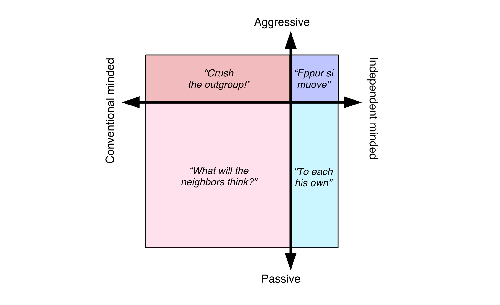

Four Quadrants of Conformism
Table of Contents

Figure 1: Four Quadrants of Confirmism [Source: Joscha Bach]
- Aggressively Conventional Minded : want to enforce rules
- Passively Conventional Minded : obey the rules
- Passively Independent Minded : Don't care about the rules
- Aggressively Independent Minded : Challenge the rules (new ideas); Eppur Si Muove
1. Independent Minded
Independent minded form groups (e.g. Universities) where they can freely explore ideas safe from the agressively conventional minded. They ar also the ones who form startups. Scientists need not be just right, they need to be right with new ideas, with ideas noone else has tired.
Free Speech, Free Inquiry is a way society protects independent minded from agressive conventional minded people.